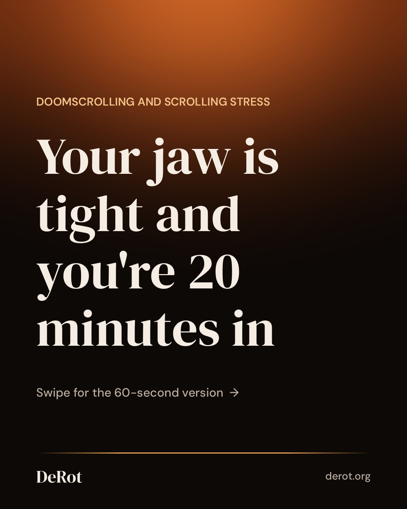
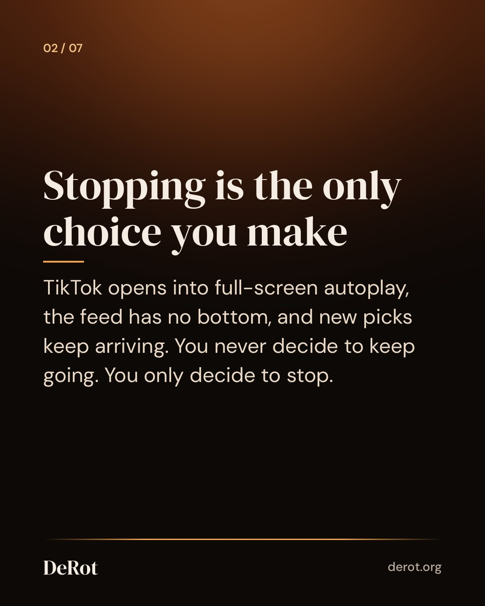
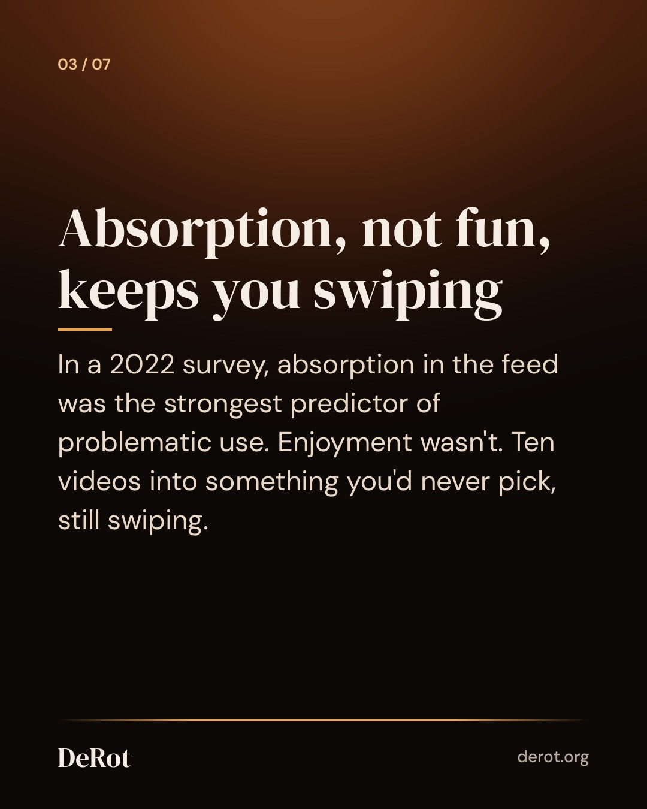
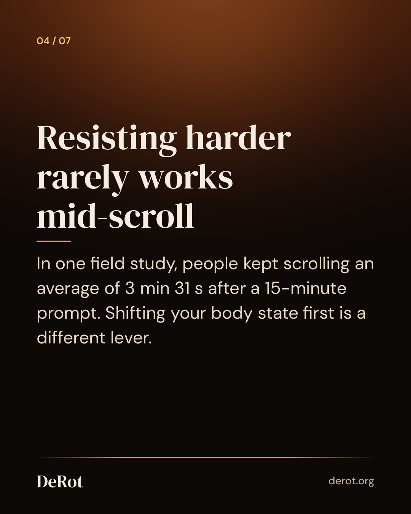
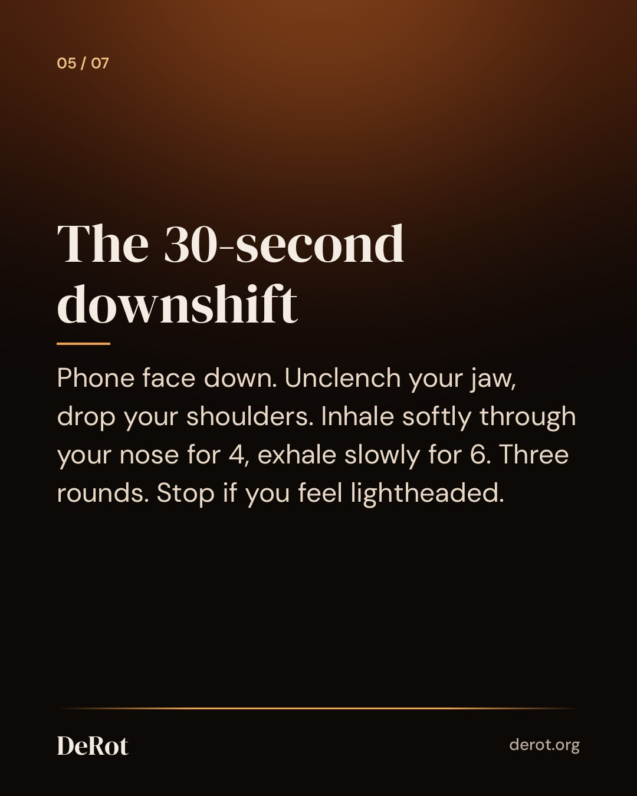
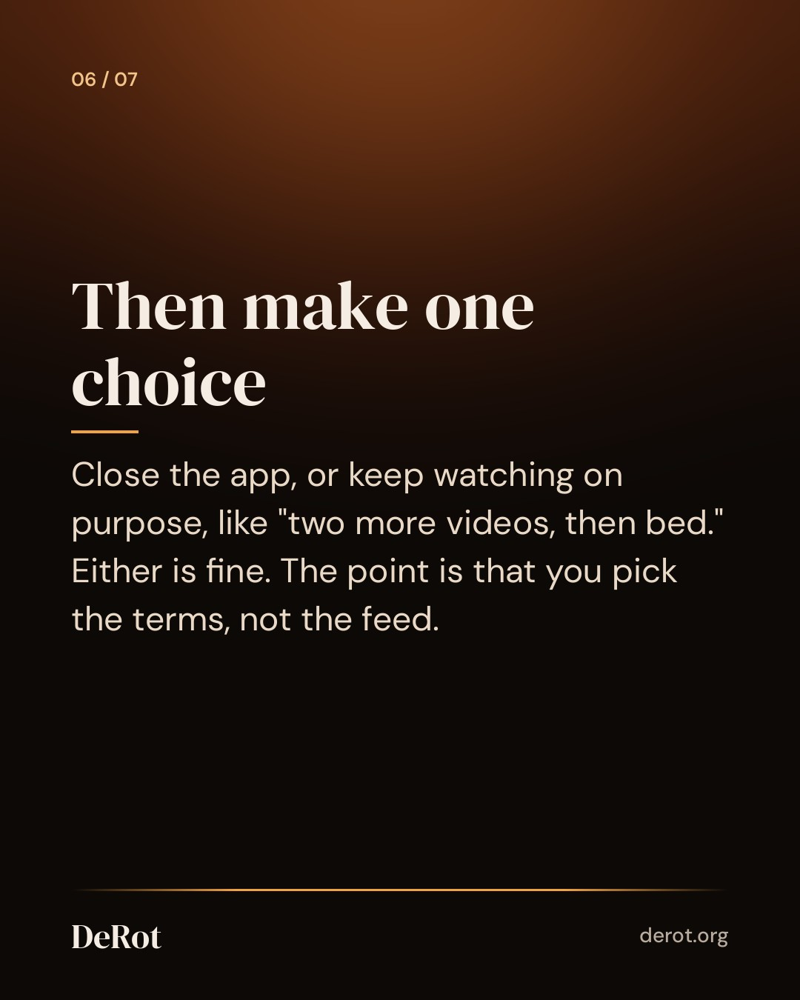

Why Can't I Stop Scrolling TikTok? What the Feed Does to Your Body
Slides (Threads cover image; Instagram posts the reel)







Instagram Reel (34s)
Instagram caption
Twenty minutes into TikTok, jaw tight, shoulders up near your ears. Here's a 30-second way back down. Put the phone face down. Unclench your jaw, drop your shoulders. Inhale softly through your nose for 4, exhale slowly for 6. Three rounds, about 30 seconds. Stop if you feel lightheaded. Then make one choice: close the app, or keep watching on purpose. Full guide: link in bio. #breathwork #nervoussystemregulation #digitalwellbeing #slowbreathing #calmbreathing
Threads
One thing worth knowing: TikTok is hard to leave partly because stopping is the only decision it asks you to make. Autoplay, no bottom, the next video already playing. So instead of resisting harder, shift your body first. Phone face down, jaw loose, in for 4, out for 6, three rounds. Then close the app or keep watching on purpose. https://derot.org/blog/why-cant-i-stop-scrolling-tiktok/
Opened TikTok for one video and looked up 25 minutes later with a tight jaw and a wired feeling? That's mostly design, not willpower. The app opens into autoplay, the feed has no bottom, and stopping is the only decision you have to actively make. Reminders to stop only help briefly. In one field study, people kept scrolling an average of 3 minutes 31 seconds after a 15-minute prompt. So we focus on shifting how you feel first. Try this: phone face down, unclench your jaw, drop your shoulders. Inhale through your nose for 4, exhale slowly for 6, three rounds. Then close the app or keep watching on purpose. Read the full guide for what the research does and doesn't show.
Schedule (UTC)
| queued | 2026-11-25T23:44:00+00:00 | ||
| threads | queued | 2026-11-25T23:44:00+00:00 | |
| queued | 2026-11-25T23:44:00+00:00 |